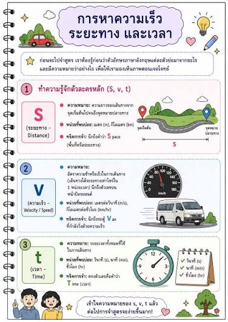

เวลาและระยะทาง

เวลาและระยะทาง หมายถึง การคำนวณระยะเวลาที่ใช้ในการเดินทางและระยะทางจากสถานที่หนึ่งไปยังอีกสถานที่หนึ่ง โดยสามารถนำไปใช้ในชีวิตประจำวัน เช่น การคำนวณเวลาเดินทาง การวางแผนการเดินทาง การคำนวณความเร็ว และการประมาณเวลาที่จะถึงจุดหมาย ซึ่งช่วยให้เราสามารถวางแผนและจัดการเวลาได้อย่างเหมาะสม.